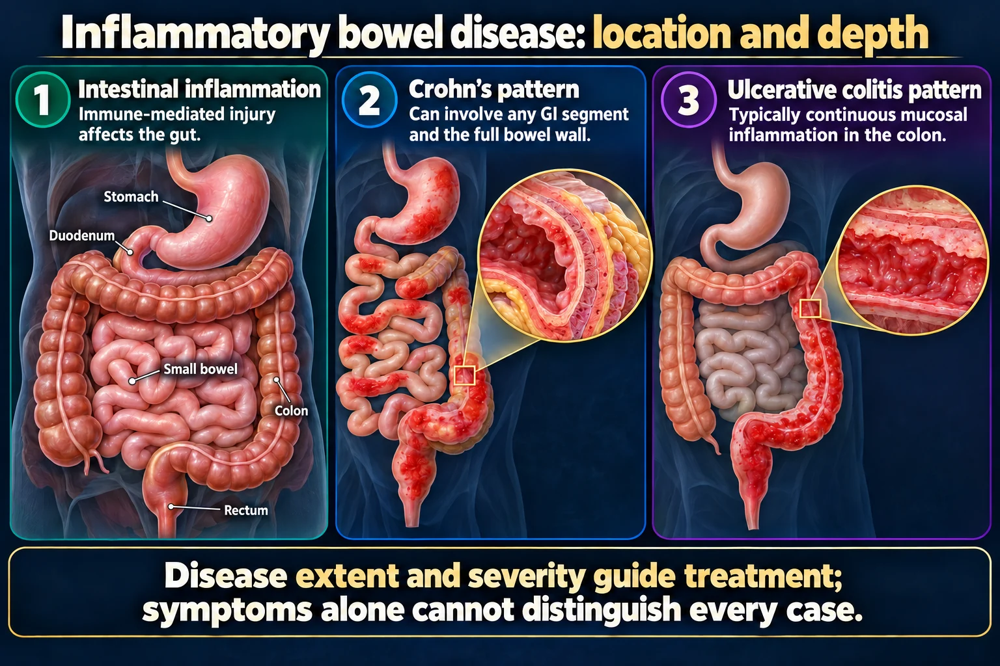

A nurse reviews the pathology of a client newly diagnosed with Crohn disease. Which statement best describes the typical pattern of intestinal involvement?
Answer
Skip lesions that can occur anywhere from mouth to anus
Reasoning
Crohn disease produces discontinuous skip lesions that may affect any part of the GI tract from mouth to anus, unlike the continuous colonic pattern of ulcerative colitis.
Why the other answers do not fit
- Continuous inflammation beginning at the rectum
- Inflammation limited to the mucosal layer of the colon
- Involvement restricted to the sigmoid colon
Shared reasoning for choices without a separate note: Crohn disease produces discontinuous skip lesions that may affect any part of the GI tract from mouth to anus, unlike the continuous colonic pattern of ulcerative colitis.



![Supine hypotension in pregnancy. Panel 1, lying flat on the back: the uterus presses on the inferior vena cava, less blood returns to the heart, and blood pressure may fall. Panel 2, turned onto the left side with the left side down: turning left reduces pressure on the IVC, blood returns to the heart more easily, and blood pressure often improves. Bottom bar: if a left tilt is needed, place a wedge under the RIGHT hip - right hip up tilts the body LEFT. Footnote: the IVC is the large vein carrying blood from the lower body back to the heart](../../img/infographics/supine-hypotension-pregnancy.webp)